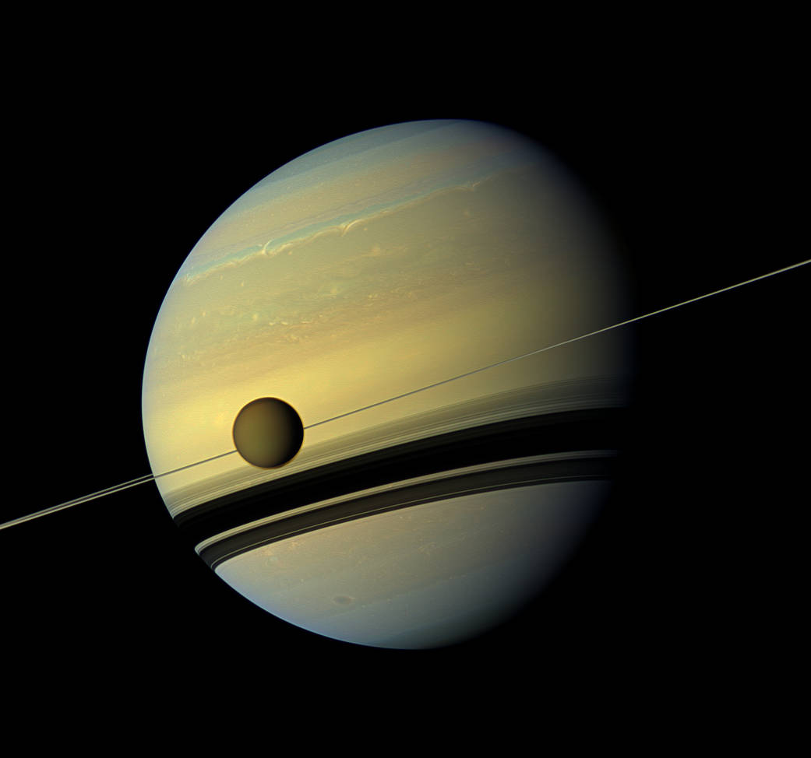
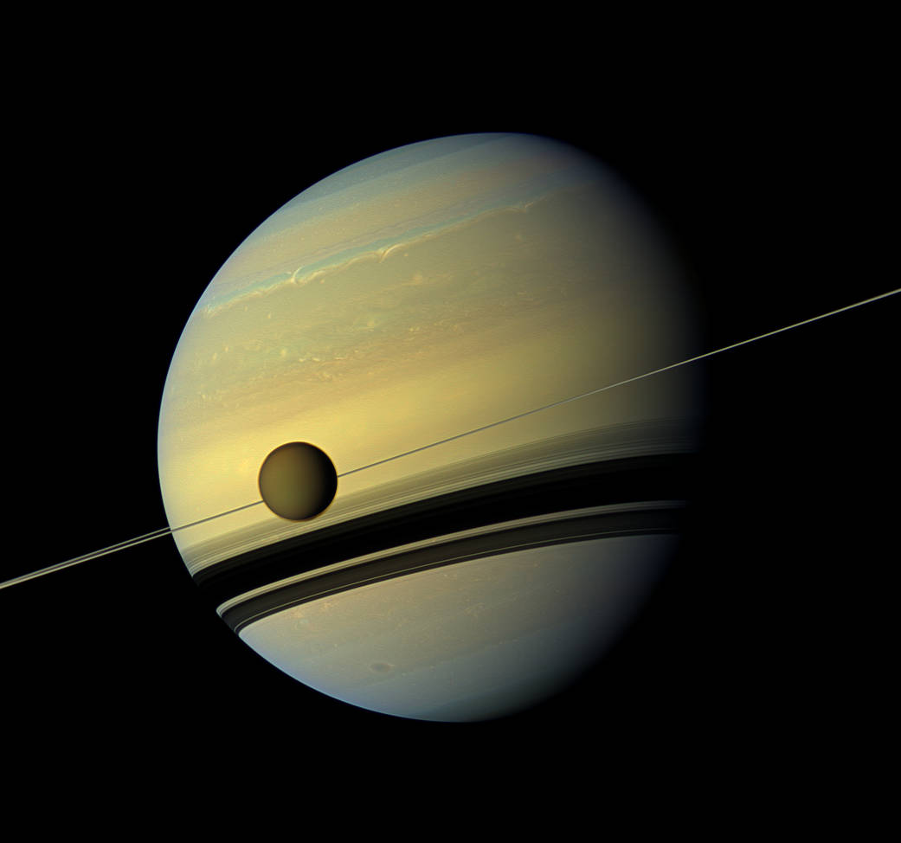

= LA WEBB ESPACIAL =
Creado por: Daniela Martinez Monares

 

Top de estrellas más masivas
- R136a1, estrella hipergigante azul
- Estrella de la Nebulosa Peonía
- Estrella Pistola
Misiones espaciales
- Apollo 8
- Géminis
- Apollo 11
- Luna 1
- Curiosity
Astrobiologia
La astrobiologia es el estudio de los orígenes, evolución, distribución y futuro de la vida en el universo. Este campo interdisciplinario requiere una comprensión integral e integrada de los fenómenos biológicos, geológicos, planetarios y cósmicos. La astrobiología abarca la búsqueda de entornos habitables en nuestro sistema solar y en planetas alrededor de otras estrellas; la búsqueda de evidencia de química prebiótica o vida en cuerpos del sistema solar como Marte, la luna Europa de la búsqueda de evidencia de química prebiótica o vida en cuerpos del sistema solar como Marte, la luna Europa de Júpiter y la luna Titán de Saturno; e investigación sobre el origen, la evolución temprana y la diversidad de la vida en la Tierra. Los astrobiólogos abordan tres preguntas fundamentales: ¿Cómo comienza y evoluciona la vida? ¿Existe vida en otros lugares del universo? ¿Cuál es el futuro de la vida en la Tierra y más allá?
Origen del Universo
La teoría más conocida sobre el origen del universo se centra en un cataclismo cósmico sin igual en la historia: el Big Bang. Esta teoría surgió de la observación del alejamiento a gran velocidad de otras galaxias respecto a la nuestra en todas direcciones, como si hubieran sido repelidas por una antigua fuerza explosiva. Con el exitoso lanzamiento y despliegue del telescopio espacial James Webb la comunidad científica pretenden obtener más datos sobre el origen del universo. Con esta nueva herramienta en el espacio, los astrónomos pretenden buscar en el universo, tanto en el espacio como en el tiempo, cosas nunca vistas antes. Y en 2023, estas observaciones ya han dado sus frutos y permitido a los científicos saber más sobre el pasado del universo. En abril de 2023, la Agencia Espacial Europea anunció que ya tenían pruebas de siete galaxias que serían más antiguas conocidas hasta la fecha. Según los astrónomos, estas formaciones de estrellas datarían de 650 millones de años después del Big Bang los que "las haría las galaxias más tempranas que se han podido confirmar espectroscópicamente". La teoría más conocida sobre el origen del universo se centra en un cataclismo cósmico sin igual en la historia: el Big Bang. Esta teoría surgió de la observación del alejamiento a gran velocidad de otras galaxias respecto a la nuestra en todas direcciones, como si hubieran sido repelidas por una antigua fuerza explosiva. Con el exitoso lanzamiento y despliegue del telescopio espacial James Webb la comunidad científica pretenden obtener más datos sobre el origen del universo. Con esta nueva herramienta en el espacio, los astrónomos pretenden buscar en el universo, tanto en el espacio como en el tiempo, cosas nunca vistas antes. Y en 2023, estas observaciones ya han dado sus frutos y permitido a los científicos saber más sobre el pasado del universo. En abril de 2023, la Agencia Espacial Europea anunció que ya tenían pruebas de siete galaxias que serían más antiguas conocidas hasta la fecha. Según los astrónomos, estas formaciones de estrellas datarían de 650 millones de años después del Big Bang los que "las haría las galaxias más tempranas que se han podido confirmar espectroscópicamente".
Origen de las Estrellas
Las estrellas no son objetos inmutables. Nacen, envejecen y mueren, aunque estos procesos suceden tan lentamente que no son apreciables en escalas de tiempo humanas. El nacimiento de una estrella, por ejemplo, dura varios cientos de miles de años, y empieza cuando una región del medio interestelar se hace lo suficiente densa y masiva como para que la fuerza de la gravedad rompa el equilibrio en que se encontraba. Cuando esto sucede, el material inicia un proceso de contracción que solo termina al crearse una estrella, en cuyo interior la fuerza de la gravedad es equilibrada mediante la producción de energía por reacciones nucleares. Formación de estrellas El proceso de formación de una estrella sucede dentro de una nube molecular, que es un objeto extraordinariamente opaco. Es por tanto invisible a nuestros ojos, aunque puede ser estudiado mediante observaciones de la radiación infrarroja y radio. Gracias a este tipo de observaciones, los astrónomos han sido capaces de entender (todavía de forma incompleta) los estadios por los que pasa una estrella al nacer, y reconstruir, por tanto, el nacimiento de nuestro Sol hace casi cinco mil millones de años. El proceso de formación de una estrella da lugar no sólo a un objeto central denso (la protoestrella), sino que también forma de manera natural un disco de materia girando a su alrededor. Este disco contiene el material que gira demasiado rápido como para concentrarse en la estrella, y da lugar al cabo de varios millones de años a un sistema planetario como el que forman la Tierra y los demás planetas. En estos primeros estadios, la protoestrella es un objeto muy activo, y produce un viento bipolar formado por dos chorros opuestos de material de alta velocidad. Estos chorros permiten a la estrella liberarse del exceso de giro (momento angular) aportado por el material del disco, que cae lentamente en espiral hacia la protoestrella. Los chorros, además, dispersan parte de la nube materna donde ha nacido la estrella y hacen que ésta, una vez formada, sea visible a nuestros ojos.